<!-- .slide: class="title-slide" data-background-color="#091A31" --> <p></p> <p class="project-context">Forest Foundation Philippines · CRC-NURTURE</p> # a national nbs map platform,<br><span class="accent">built open</span>. <p class="subtitle">Background and proposed methodology · BNHR</p> <p class="url">bnhr.xyz</p> --- ## BNHR has spent 12 years helping Filipinos make the most of open geospatial <style> .stat-grid { display: grid; grid-template-columns: repeat(4, 1fr); gap: 32px; margin-top: 48px; } .stat { background: #fff; border-radius: 8px; padding: 36px 32px; box-shadow: 0 2px 10px rgba(12,35,64,.08); border-top: 8px solid var(--bnhr-accent-blue); } .stat-num { font-family: var(--font-title); font-weight: 800; font-size: 80pt; line-height: 1; letter-spacing: -0.2rem; color: var(--bnhr-main-dark); margin: 0 0 24px 0 !important; } .stat-label { font-size: 24pt; line-height: 1.3; margin: 0 !important; } .stat.orange { border-top-color: var(--bnhr-accent-orange); } .stat.green { border-top-color: var(--bnhr-accent-green); } .stat.cyan { border-top-color: var(--bnhr-cyan); } .quiet { font-size: 24pt; color: #4a5a70; margin-top: 48px !important; } .card-grid { display: grid; grid-template-columns: repeat(4, 1fr); gap: 32px; margin-top: 40px; } .card-grid.five { grid-template-columns: repeat(5, 1fr); } .card { background: #fff; border-radius: 8px; padding: 32px 32px; box-shadow: 0 2px 10px rgba(12,35,64,.08); } .card h3 { font-size: 40pt; margin: 0 0 16px 0; color: var(--bnhr-accent-blue); } .card p { font-size: 24pt; line-height: 1.3; margin: 0 !important; } .card p.stage { font-family: var(--font-body); font-size: 17pt; font-weight: 700; white-space: nowrap; color: var(--bnhr-main-dark); background: var(--bnhr-accent-blue-pale); display: inline-block; padding: 6px 12px; border-radius: 4px; margin: 0 0 20px 0 !important; } .big-url { font-family: var(--font-title); font-weight: 800; font-size: 72pt; letter-spacing: -0.15rem; color: var(--bnhr-accent-blue); margin: 32px 0 40px 0 !important; } .url-row { display: flex; align-items: center; gap: 64px; margin: 32px 0 40px 0; } .url-row .big-url { margin: 0 !important; } .url-row .qr { width: 280px; height: 280px; margin: 0; border-radius: 8px; box-shadow: 0 2px 10px rgba(12,35,64,.08); } .section-slide .contact { font-size: 28pt; color: var(--bnhr-main-white); margin-top: 32px !important; } .section-slide .creds { font-size: 22pt; color: var(--bnhr-accent-blue); margin-top: 8px !important; } .title-slide h1 .accent { color: var(--bnhr-accent-orange); } </style> <div class="stat-grid"> <div class="stat"><p class="stat-num">only</p><p class="stat-label">QGIS Sustaining Member in the Philippines</p></div> <div class="stat orange"><p class="stat-num">1 of 5</p><p class="stat-label">QGIS Certifying Organizations in Asia</p></div> <div class="stat green"><p class="stat-num">1 of 4</p><p class="stat-label">OSGeo Charter Members from the Philippines</p></div> <div class="stat cyan"><p class="stat-num">12+</p><p class="stat-label">years using, teaching, and developing open geospatial</p></div> </div> <p class="quiet">UP BS Geodetic Engineering · MS Geomatics Engineering · Open Climate Fellow 2023, one of seven worldwide</p> --- ## I help build open geospatial communities <div class="two-column"> <div class="column"> <div class="column-header">Conferences I co-organize</div> - **State of the Map 2025** - **State of the Map Asia 2023** - **Pista ng Mapa** - **FOSS4GPH** meetups - **Maptime Diliman** </div> <div class="column"> <div class="column-header">What I give away</div> - Learn QGIS · Learn Geodata Management · Learn Python, all with BNHR - Awesome Data Philippines - OKF Open Geodata Programme: **300+ participants, 30+ countries** </div> </div> --- ## I have built each part of this platform before | Project | What it proves for the NbS platform | |---|---| | **ADB SPADE** · GeoNode, since 2018 | A national-scale catalogue and repository on the same stack | | **ADB Enterprise GIS** · 2025 to present | Running an institution's GIS in production, day to day | | **Phil-LiDAR 2 REMap** · Django, PostGIS, Leaflet | Search and screen suitable sites by area: the NbS screening pattern | | **BlueWebMaps** · blue carbon web GIS | Web maps for coastal ecosystem conservation | | **EITI data portal and API** · 2023 to present | A public data platform, operated and defended in production | | **PSA five-day courses** · 2022 to 2026 | Training a national agency to run PostGIS, GeoServer, GeoNode | --- <!-- .slide: class="section-slide" data-background-color="#0c2340" --> # how i'll<br>build it --- ## The platform has four main jobs <div class="card-grid"> <div class="card"><h3>learn</h3><p>what NbS are and why they matter for Philippine cities</p></div> <div class="card"><h3>explore</h3><p>NbS initiatives with hazard, population, tenure, and ecosystem layers</p></div> <div class="card"><h3>screen</h3><p>which NbS approaches suit a place, from pilot-site data</p></div> <div class="card"><h3>browse</h3><p>a catalogue of NbS approaches and practices</p></div> </div> <p class="quiet">Underneath: a national repository the NbS Support Network contributes to, institutionalised under DENR-CCS.</p> --- ## Every feature starts from a user story; the data comes after <div class="card-grid"> <div class="card"><h3>1 · stories</h3><p class="stage">Define</p><p>From the Foundation, DENR-CCS, and the Support Network: who needs to do what, and why</p></div> <div class="card"><h3>2 · data audit</h3><p class="stage">Find · Get · Verify · Clean</p><p>Which layers can answer each story: sources, formats, quality, gaps, licences</p></div> <div class="card"><h3>3 · build</h3><p class="stage">Analyse · Present</p><p>Only features that trace back to a story, on data that passed the audit</p></div> <div class="card"><h3>4 · validate</h3><p class="stage">back to Define</p><p>Users test the platform against their own stories</p></div> </div> <p class="quiet">The School of Data's Data Pipeline, which I've taught internationally as a School of Data Fellow and OKF's Data Training Lead, with validation closing the loop.</p> --- ## Five principles we follow - **Open by design:** free and open source throughout; no licence fees after turnover - **Standards-based:** OGC services, so DENR and partners use the layers in QGIS, ArcGIS, or their own portals - **Co-designed:** user stories, site map, and screening logic agreed in workshops before code - **Built for turnover:** one-command deployment, manuals, and hands-on training - **Responsible AI:** reviewed by the developer; no stakeholder data sent to third-party AI services --- ## One stack, organized the way I teach it <div class="card-grid five"> <div class="card"><h3>store</h3><p>PostGIS · S3 object storage</p></div> <div class="card"><h3>share</h3><p>GeoServer · pygeoapi · OGC services</p></div> <div class="card"><h3>catalog</h3><p>GeoNode · metadata · search</p></div> <div class="card"><h3>use</h3><p>MapLibre web maps</p></div> <div class="card"><h3>scale</h3><p>PMTiles · Cloud-Optimized GeoTIFF</p></div> </div> <p class="quiet">The fixed core is PostGIS, MapLibre, and Docker. The choice with DENR-CCS is how layers are shared and catalogued.</p> --- ## Three ways to serve the layers, each with a real trade-off | Configuration | Gives you | Choose it when | Costs you | |---|---|---|---| | **GeoNode-based** | Catalogue, metadata, accounts, upload and moderation, OGC services, story and map editors | DENR-CCS wants a full catalogue and spatial data infrastructure | Heaviest to host and upgrade; portal less flexible | | **GeoServer + custom site** | OGC services straight from PostGIS; a portal designed from scratch | The public experience matters most | Catalogue, CMS, and accounts must be built | | **Cloud-native first** | PMTiles and COG on object storage; minimal OGC via pygeoapi | National scale on a fixed budget, small ICT team | Catalogue, CMS, and accounts must be built | --- ## GeoNode-based: the full spatial data infrastructure <div class="two-column"> <div class="column"> <div class="column-header">Components</div> - GeoNode 5 on Django, with MapStore - GeoServer for WMS, WFS, WCS - PostGIS; CSW for the catalogue - Advanced publishing workflow </div> <div class="column"> <div class="column-header">Watch for</div> - Heaviest to host: about 4 vCPU, 16 GB - Upgrades need care with overrides - Portal UX bound to GeoNode's layout </div> </div> --- ## GeoServer with a custom site: the most control over the portal <div class="two-column"> <div class="column"> <div class="column-header">Components</div> - GeoServer publishing from PostGIS - A custom front end and CMS - Layer registry in the platform's own schema - MapLibre consuming WMS, WMTS, vector tiles </div> <div class="column"> <div class="column-header">Watch for</div> - No catalogue or metadata editor out of the box - Accounts and roles built by hand - More build days per feature </div> </div> --- ## Cloud-native first: the lowest running cost at national scale <div class="two-column"> <div class="column"> <div class="column-header">Components</div> - PMTiles and Cloud-Optimized GeoTIFF on object storage - pygeoapi for OGC API access - A static or light front end on MapLibre - GeoParquet for analysis downloads </div> <div class="column"> <div class="column-header">Watch for</div> - CMS, catalogue, and accounts built separately - Newer skills for a government ICT team - Editing workflows need their own design </div> </div> --- ## GeoNode does the most out of the box <bnhr-heatmap columns="GeoNode, GeoServer + custom, Cloud-native" highlight="GeoNode" row-label-width="440px"> Maps and OGC services: ●, ●, ● Catalogue and content pages: ●, , Accounts and moderation: ●, , Lowest hosting cost: , , ● </bnhr-heatmap> --- ## Mix and match: a GeoNode core with cloud-native national layers <bnhr-fanout input="PostGIS + object storage" output="One MapLibre front end"> GeoNode: catalogue, accounts, uploads GeoServer: OGC services for QGIS and partners PMTiles and COG: heavy national layers </bnhr-fanout> --- <!-- .slide: class="section-slide" data-background-color="#0c2340" --> # it's already<br>running. --- ## A working demo, built from your call for proposals and open data <div class="url-row"> <p class="big-url">demo-pcp4nbs.bnhr.xyz</p> </div> <bnhr-pipeline highlight="Screen">Home, Learn, Explore, Screen, Approaches, Contribute</bnhr-pipeline> -- ## Home: four entry points for four jobs <div class="screenshot-container" style="max-width: 62%">  </div> -- ## Learn: explainer stories editors publish themselves <div class="screenshot-container" style="max-width: 62%">  </div> -- ## Explore: national and city maps with every layer group <div class="screenshot-container" style="max-width: 62%">  </div> -- ## Maps: hazard, population, and ecosystem layers together <div class="screenshot-container" style="max-width: 62%">  </div> -- ## Screening: pick a city and a barangay <div class="screenshot-container" style="max-width: 62%">  </div> -- ## Screening: a hazard profile and ranked approaches <div class="screenshot-container" style="max-width: 62%">  </div> -- ## Approaches: a catalogue with facets by hazard, ecosystem, and cost <div class="screenshot-container" style="max-width: 62%">  </div> -- ## Contribute: Support Network members upload, managers publish <div class="screenshot-container" style="max-width: 62%">  </div> -- ## Catalogue: metadata editor with the NbS vocabularies <div class="screenshot-container" style="max-width: 62%">  </div> --- ## The demo is where your user stories start, not where they end - **Your user stories** replace the assumptions I drew from the call for proposals - **The data audit** then finds the layers those stories need: official hazard maps from MGB, PAGASA, and Project NOAH, tenure, biodiversity - **Your NbS experts** validate the suitability matrix behind the screening - **Users validate** each cycle against their own stories --- ## Two build-and-validate cycles, each ending in stakeholder feedback | When | Phase | Outputs | Tranche | |---|---|---|---| | 2 weeks after signing | Inception | Work plan, stakeholder map | 50% | | October–November 2026 | Stories, audit, cycle 1 | User stories, data audit, wireframes, database schema | | | By 1 December 2026 | Beta | Beta platform, manual outlines | 20% | | By 1 February 2027 | Cycle 2 | Platform v2, full manuals, technical docs | 20% | | By 24 February 2027 | Launch and turnover | Training, final platform, source code | 10% | | March 2027 – February 2028 | Maintenance | Monitoring, security patches, updates, admin support | included | --- ## The three financial versions differ only in who pays for hosting | Version | Hosting | Design and development | Training | Maintenance reports | |---|---|---|---|---| | **V1** | BNHR, 17 months (~23% of budget) | 27 days | 2-day remote | Quarterly | | **V2** | Client from the start | 38 days | 4-day remote | Monthly | | **V3** · recommended | BNHR to turnover (~8% of budget), then client | 33 days | 3-day remote | Monthly | <p class="quiet">All three: the same all-inclusive price. Open question: hosting for 5 months or 17?</p> --- ## DENR-CCS should be able to run it without me <div class="two-column"> <div class="column"> <div class="column-header">Training</div> - **Administrators:** content, uploads, users, basic maintenance - **End users:** explore, screen, report - Training guide **already drafted**: 8 modules with exercises </div> <div class="column"> <div class="column-header">Turnover</div> - User and developer's manuals - Database schema and data dictionary - Full source code in Git - One-command Docker deployment </div> </div> --- ## I plan for the four things that usually go wrong | Risk | How I handle it | |---|---| | Layers arrive late or in mixed formats | Data audit right after the user stories; build with what exists and document gaps | | Workshop scheduling slips | Online option for every session; decisions kept in a shared log | | DENR-CCS integration needs surface late | DENR-CCS at inception; OGC standards make integration configuration, not code | | Scope grows past the fixed price | Prioritised feature list per phase; written change orders | --- <!-- .slide: class="section-slide" data-background-color="#0c2340" --> # maraming<br>salamat. <p class="contact">BNHR · bnhr.xyz</p> <p class="creds">Only QGIS Sustaining Member in the Philippines · 1 of 5 QGIS Certifying Organizations in Asia · 1 of 4 OSGeo Charter Members from the Philippines</p>